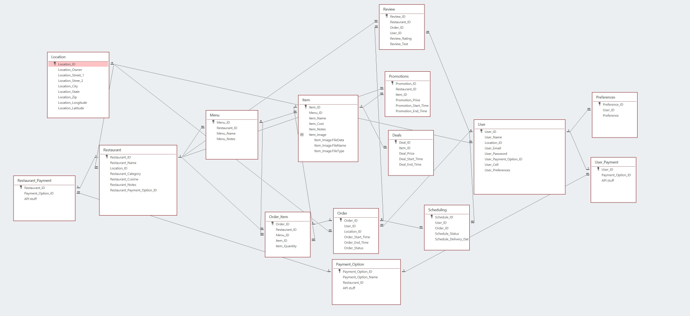

Repository
If you want to check out the code for this project click this link.
Introduction
The goal of this project was to create a food delivery service that would mimic other services in this area, such as Postmate, GrubHub, Uber Eats. My group for this project consisted of 5 programmers that handled different parts of this relatively long project. While everyone was able to work and understand every aspect of our service, we focused on our preferences and expertise.

Description
Our food delivery system allowed users to order food from multiple restaurants and then review them based on the quality, time of delivery, and price. Throughout development, we learned how a real company operates and how a website is built and deployed, as well as how to maintain and integrate new code into an already functional code repository without breaking previous work.
Barbosa's delivery used RDS databases to keep track of the list of restaurants, their menu, menu items and their respective reviews. It also used databases to store user information and login, password, and user reviews. For a more techinical description of the database design we have the picture below
In order to expand our pool of restaurants beyond our test data, we implemented a module that uses the Yelp Fusion API to get restaurants based on the terms that the user gives our application. The API gave us access to data for restaurants but also another set of problems since it would not give the same data, we had in our test data, such as restaurant menus and menu items. Since we had different data sets, one from our mock data and one from the API, we created two different templates for the restaurant page that would display the data we had correctly. After the implementation, we were able to also create an “advanced search” page that would allow the user to specify even more parameters for searching restaurants and give the website a wider range in case we wanted to expand our application. In total, there were 14 parameters that the Yelp Fusion API could use to search for restaurants, such as longitude, latitude, term, type of business, range from a specific point, etc. We decided that we would allow 4 parameters total for the user to choose since they made the most sense out of the 14 parameters, which are: term (or name of the restaurant), location, price, and range.
Contribuition
For this project, I was chosen by my peers as the CEO of our company and I was in charge of organizing our group efforts to develop the website, schedule our weekly meetings to discuss what everyone was working on and, in coordination with our SCRUM master, plan the next development steps.
I was also responsible for designing and developing our back-end using python. By utilizing the Django framework, I was able to create our website navigation
While the service is not online anymore, you can check the code on my GitHub page and you can also check our meeting logs from our 5-month development divided into weekly spints here.